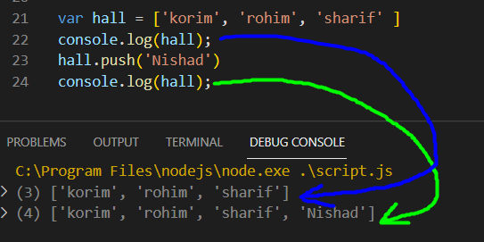
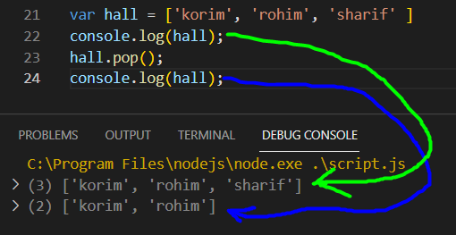

Array হল এক প্রকারা ভেরিএবল ,
কোন একটা ভেরিএবলের মধ্যে একাধিক ডাটা রাখলে সেটাকে Array বলে ।
একটা Array এর ডাটা third braket [ ] এর মধ্যে থাকে ।
কোনো Array এর মধ্যে থাকা উপাদান সংখ্যা জানতে  এই exprassion ব্যেবহার করতে হবে ।
এই exprassion ব্যেবহার করতে হবে ।

প্রতিটা বইতে যেমন index বা সূচি-পত্র থাকে । একই ভাবে Array এর ক্ষেত্রেও সূচি-পত্র আছে ।
Array তার Elements বা উপাদান গুলাকে পজিসনিং করে নিচের নিয়মে ,
অর্থাৎ 0 হতে শুরু করে ।

যেমন একটা বই এর সূচি-পত্র এর সাহায্যে বইটির কোন অংশে কি আছে সেটা সেটা জানা ও খুঁজে নেয়া যায়
একই ভাবে Array এর মধ্যে থাকা Element গুলার যেকোনো রকম access নিতে হয় Array এর index এর সাহায্যে ।
কোন Array Element এর অবস্থান জানতে হলে

এখানে 'gaan' Element এর অবস্থান 3 দেখানোর কারন হোল Array তার Element গুলাকে count করে 0 হতে ।
সে হিসাবে 'gaan' এর অবস্থান 3 ।
কোন Array Element এর অবস্থান চেক কারার সময় যদি তার অবস্থান -1 অর্থাৎ Negative value মানে 0 এর কম , তাহলে বুজতে হবে যে অই Array এর মধ্যে Element টার কোন অবস্থান নেই ।
যেমন ।


কোন Array's Element এর index এর সাহায্যে সেই Element কে change ও করা যায় ।

কোন Array এর কোনো নির্দিষ্ট Element কে কোন আলাদা ভারিএবলের ভেতর রাখতে হলে ।
একটা আলাদা ভারিএবল নিতে হবে তারপর সেটার মধ্যে , ভ্যেলু এর জায়গায় -- যেই Array এর থেকে কোন Element নেওয়া হবে তার name দিতে হবে
এবং পাশে third braket এর মধ্যে index অনুযায়ী কত নাম্বার Element রাখব সেটার নাম্বার লিখতে হবে ।

Array একটা Collection , যার মধ্যে থাকে অনেক গুলা Element
Array এর Collection গুলার এর মধ্যে কোন Element কে নতুন করে যোগ করাকে বলে push
বের করা বা বাদ দেয়া কে বলে pop ।
push করতে হলে array এর নাম লিখতে হবে ,
তারপর .push() দিতে হবে __ name.push(anything) __
এবং এই first braket এর মধ্যে নতুন করে যে টাইপের data দিতে চাই সেটা দিতে হবে ।
এবং এই Element টা সবার শেষে গিয়ে add হবে ।

.push এর সাহায্যে কোন Element যোগ করলে সেটা সব Element এর শেষে যোগ হয় ।
তো শুরুতে যোগ করতে হলে .push এর যায়গায় .unshift ব্যেবহার করতে হবে ।

pop করতে হলে array এর নাম লিখতে হবে ,
তারপর .pop() দিতে হবে __ name.pop() __
এবং এই first braket এর মধ্যে কোন data দিতে হবে না ।
এবং ঐ array এর শেষ Element টাকে বের করে দিবে ।

.pop এর সাহায্যে কোন Element বের করলে সব Element এর শেষে Element বের হয় ।
তো শুরুর element বের করতে হলে .pop এর যায়গায় .shift ব্যেবহার করতে হবে ।

pop এর সাহায্যে যে Element টাকে বের করা হয়েছে সেটাকে চাহিলে আবার অন্য একটা ভেরিএবলের মধ্যে জমা করা যায় ।